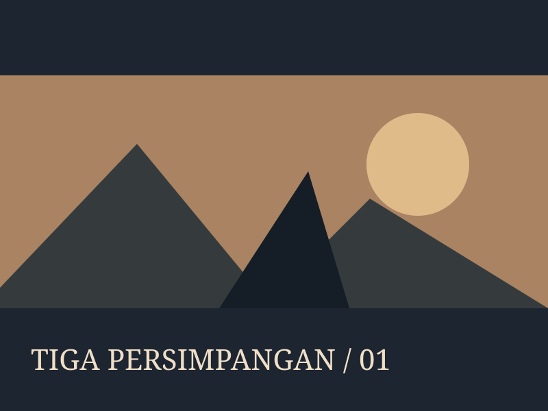

Tiga Persimpangan
Cerita memiliki tiga sudut pandang dengan waktu berbeda.
Baca proses: Tiga Persimpangan
Konteks dan peran
Studi mandiri demonstrasi. Peran: director and editor. Cerita memiliki tiga sudut pandang dengan waktu berbeda.
Keputusan
Gunakan penanda lokasi dan motif suara untuk transisi.
Artefak dan tindak lanjut
Contoh ini memperlihatkan arah dan dokumentasi proses. Ganti ilustrasi dengan artefak asli, jelaskan kontribusi pribadi, dan sertakan hasil validasi yang benar-benar tersedia.